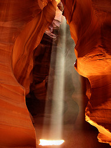

Antelope Canyon
Corkscrew Canyon - Tse' bighanilini - Hasdestwazi
Useful Information
| Location: | Near Page, Arizona |
| Open: |
Entrance Fee Station:
MAR to OCT daily 8-17. NOV to FEB closed. Guided tours all year. [2010] |
| Fee: |
General Admission: Adults USD 6, Children (0-7) free. Navajo Tours: Upper Antelope Canyon: Adults USD 25, Children (5-11) USD 11. Photography Tour: Adults USD 40. [2010] |
| Classification: |
 Gorge Gorge
|
| Light: | n/a |
| Dimension: | Upper Antelope: A=1,220m asl, D=36m |
| Guided tours: | |
| Photography: | |
| Accessibility: | |
| Bibliography: | |
| Address: |
Lake Powell Navajo Tribal Park Office, Effie Yazzie, Park Manager, P.O. Box 4803, Page, AZ 86040, Tel: +1-928-698-2808, Fax: +1-928-698-2820.
E-mail: |
| As far as we know this information was accurate when it was published (see years in brackets), but may have changed since then. Please check rates and details directly with the companies in question if you need more recent info. |
|
History
Description
|  |
| Image: Antelope Canyon in Arizona by Lucas Löffler. |
Antelope Canyon is, what the Americans call a slot canyon. This is a narrow gorge cut into the rock with more or less constant width. The canyon is at some points 36m deep, at the same time it is only a few meters wide.But what makes Antelope Canyon so special is the rock. Navajo sandstone with layers in all shades of red and light brown, combined with the sunlight flowing into the canyon at noon makes it the most astonishing sight of this state.
This place is owned and managed by the native Americans, the the LeChee Chapter of the Navajo Nation. The Navajo name for Upper Antelope Canyon is Tse' bighanilini which means the place where water runs through rocks. The name for Lower Antelope Canyon is Hasdestwazi which means spiral rock arches. The English name is due to the pronghorn antelope which once roamed freely in Antelope Canyon.
The Canyon is dry most of the year, but sometimes after one of the rare rains it floods. This makes any visit mortal. As a result visits are possible all year, but only with an authorized guide. Such guided tours must be reserved and may be cancelled in case of such weather conditions. The Navajo charge a for the visit of the canyon and the tour costs extra. Taking pictures is allowed but restricted to two hours. We have given the fee for a single operator, Navajo Tours. For detailed info on other operators see the official website.
- See also
 Search Google for "Antelope Canyon"
Search Google for "Antelope Canyon" Google Earth Placemark
Google Earth Placemark Antelope Canyon - Wikipedia
Antelope Canyon - Wikipedia Navajo Parks & Recreation - Antelope Canyon,
official website.
Navajo Parks & Recreation - Antelope Canyon,
official website.- Antelope Canyon Navajo Tours - Home
- Antelope Canyon Tours by Roger Ekis
- antelopeslotcanyontours.com
- Overland Canyon Tours | Explore the best exclusive slot canyons of Norther AZ, and Southern UT
- Hummer Adventures
- Antelope Canyon and Horseshoe Bend - Page, AZ Trip Guide and Photography Tips - Imprints of Light - Anand Muralidharan
- Antelope Canyon: slot canyon near Page/Lake Powell, Arizona